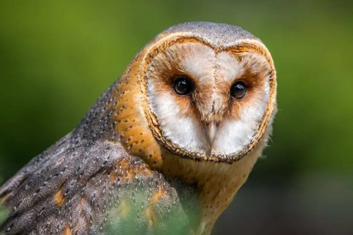

Distinguished by its captivating and enigmatic presence, the American Barn Owl stands out as a truly remarkable avian species. Its ethereal appearance mesmerizes with an air of mystique.
This nocturnal creature expertly conceals itself within dense foliage or hollow tree trunks during daylight hours, reserving its nocturnal expeditions for the cover of darkness in search of prey. Belonging to a subspecies group that includes the Western and Eastern Barn Owls, the American Barn Owl showcases striking physical attributes that captivate onlookers.
Its upper body and wings boast a delicate pale brown hue, beautifully contrasting with the creamy white tones adorning its face, chest, and belly. Such unique facial features have inspired a plethora of tales and legends, often weaving the owl into the fabric of mystical and celestial narratives.
The American Barn Owl is a captivating nocturnal bird that spends its days hidden among trees or vegetation, preferring to hunt under the cover of darkness. During the nesting season from March to June, these owls form monogamous pairs, with the male diligently searching for suitable nesting spots like tree cavities or cliffs. Courtship rituals involve chasing and sweeping displays before breeding.
In Minnesota, American Barn Owls primarily feed on small mammals like voles, shrews, and mice. Their unique asymmetrically placed ears allow them to locate prey by sound, even in complete darkness. Although they may also consume small birds and insects, their diet mainly consists of the small rodents found in Minnesota’s agricultural landscape.
While the American Barn Owl is not globally threatened, its population in North America has declined due to increased pesticide and rodenticide use. These chemicals contaminate their food sources, leading to significant fatalities. However, the species has shown resilience and the ability to recover from these losses in the short term.